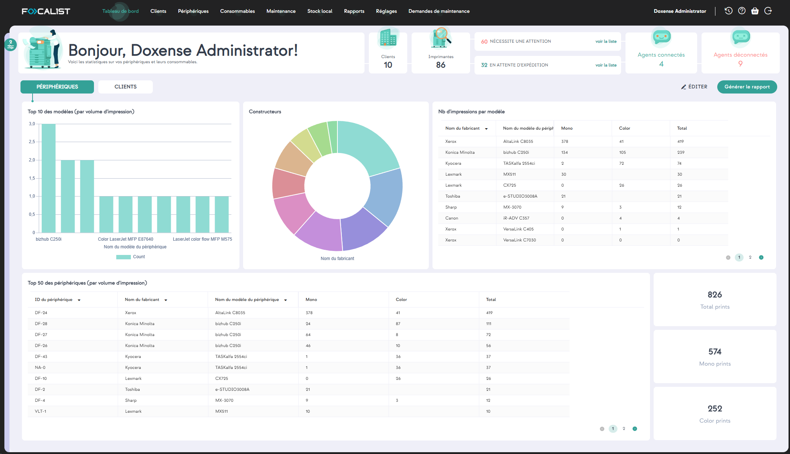
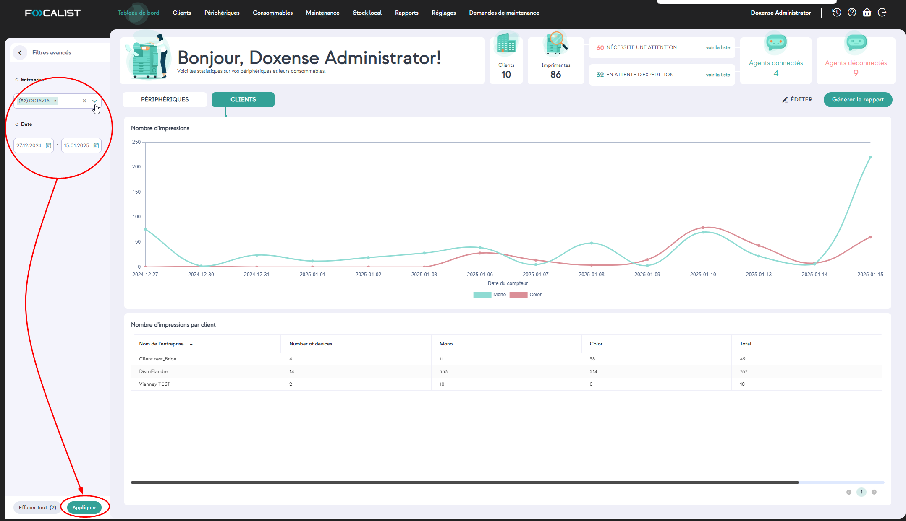
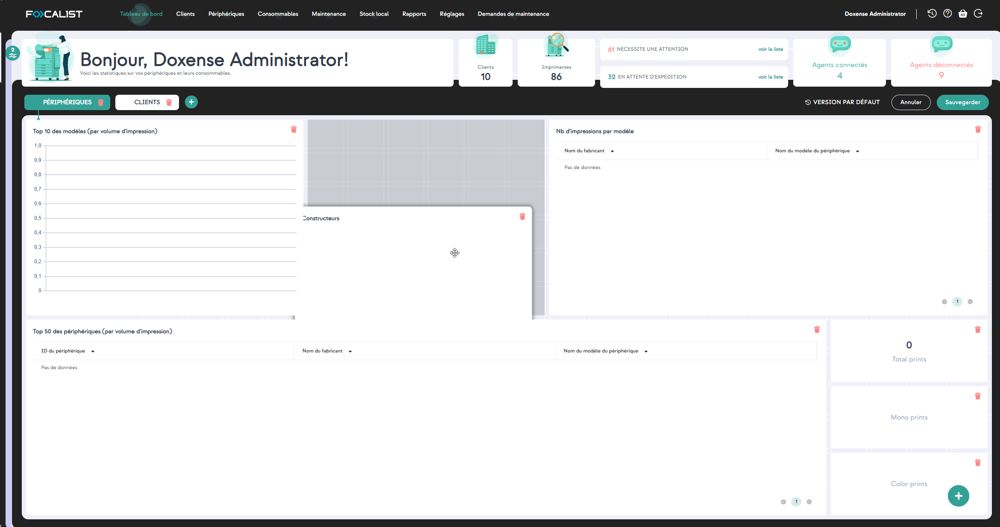
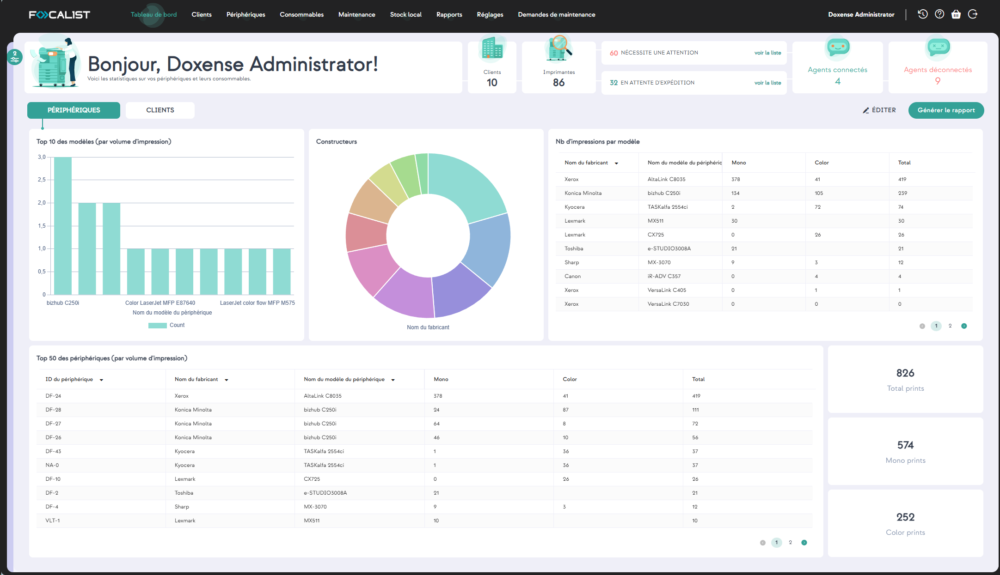
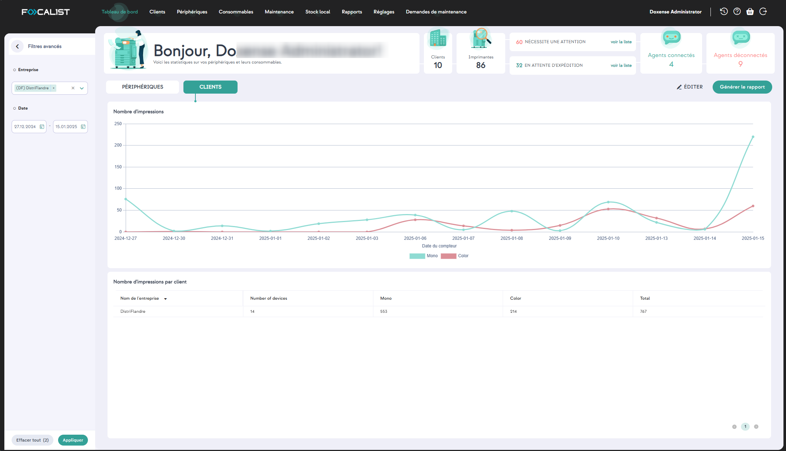

Tableau de bord
Le Tableau de bord affiche des données statistiques.
Conçu dans un souci de flexibilité, il peut être personnalisé en fonction des préférences de chaque client. Vous pouvez donc en modifier les paramètres et sélectionner les données qui vous paraissent les plus pertinentes.
De plus, il est possible de choisir ou de créer un rapport affiché sur l'écran principal de l'application.
Par défaut, le Tableau de bord est structuré en 3 parties :
-
le bandeau haut contient des informations relatives à l’application tout entière, c’est-à-dire le nombre total de clients et de périphériques, des alertes relatives aux incidents ou tâches en attente, le nombre d'agents connectés et déconnectés ;
-
la section inférieure affiche les informations statistiques relatives aux Périphériques ou aux Clients (en fonction du bouton sélectionné).
-
le menu de gauche, escamoté et visible en cliquant sur le bouton en haut à gauche offre des filtres de recherche.
Si vous avez sélectionné la vue Clients, c'est le premier client de la liste qui s'affiche par défaut. Le menu de gauche vous permet de sélectionner un autre client ainsi que la période dont vous souhaitez connaître les données :

Sous l'onglet Clients, les données affichées sont les statistiques du ou des clients sélectionnés dans le menu de gauche (escamoté par défaut) et pour la période indiquée.
Pour modifier ces données,
-
cliquez sur le bouton Filtres ;
-
sélectionnez l'entreprise et la période dont vous souhaitez voir les données ;
-
cliquez sur le bouton Appliquer :

Personnalisation du tableau de bord
Le bouton Editer permet de personnaliser le tableau de bord en y agençant les sections selon des besoins spécifiques.
En édition, vous pouvez :
-
ajouter un dossier (ajouter un onglet)
-
supprimer l'onglet Périphériques ou Clients
-
déplacer les sections par glisser/déposer,
-
les supprimer en cliquant sur l'icone
-
ajouter des rapports en cliquant sur le bouton

Périphériques
Les données affichées par défaut dans le tableau de bord sont celles des Périphériques d'impression utilisés chez clients sélectionnés :

Clients
Sous l'onglet Clients s'affichent les données données relatives au(x) client(s) sélectionné(s) pour la période indiquée dans le menu Filtres :
-
Nom de l'entreprise : nom de l'entreprise et son emplacement principal situé en dessous (en choisissant le nom de l'entreprise, vous pouvez accéder aux paramètres de l'entreprise sélectionnée) ;
-
Préfixe : abréviation servant à désigner l'entreprise ;
-
Emplacements : nombre d'emplacements ajoutés pour une entreprise donnée (en cliquant dessus, vous accédez aux paramètres de l'emplacement de l'entreprise)
-
Type de facturation : méthode de règlement adoptée par le client
-
Agent : dernier agent utilisé (avec date et état)
-
Nombre d'appareils : informations sur le nombre d'appareils attachés à une entreprise (en appuyant dessus, vous accéderez à l'onglet des appareils avec un filtre activé pour l'entreprise choisie)
-
Volumes du mois précédent : nombre d'impressions du mois précédent
-
Action : en cliquant sur les 3 points, vous pouvez choisir de modifier et d'accéder aux paramètres de l'entreprise, ou de désactiver l'entreprise.
